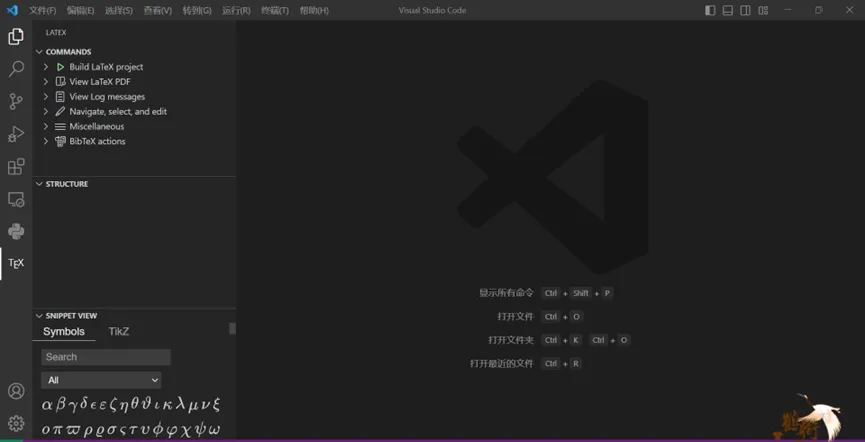
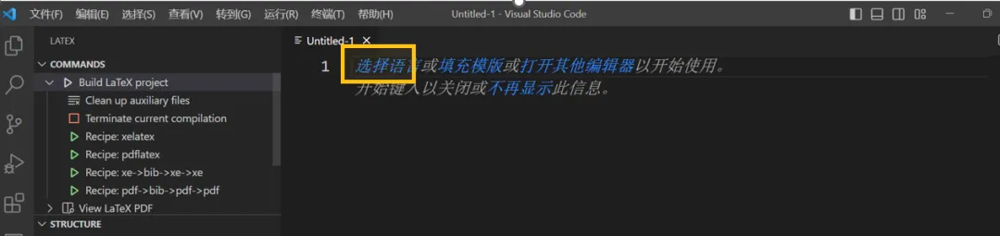
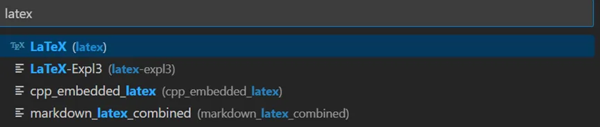

未央学术 | 叮!获得LaTeX金色技能书

00、引言
等等，你说什么？
你居然还在用word写实验报告！
你居然无法让图片乖乖听话！
你居然为了一个公式狂敲20分钟！
你居然只是改了个数据表格就变成了一团乱麻！
看来，你的lv终究还是太低了。
不过，不用担心！
未央科协向各位未小羊们赠送了金色品质的技能书——LaTeX讲座与系列推送
 小羊们，快来学习，点满技能点吧！相信在讲座和系列推送的帮助下，你们也一定能制作出像这样的高颜值的基物报告！
小羊们，快来学习，点满技能点吧！相信在讲座和系列推送的帮助下，你们也一定能制作出像这样的高颜值的基物报告！

01、LaTeX介绍
LaTeX，是一种基于TEX的排版系统，由美国计算机学家莱斯利·兰伯特（LeslieLamport）在20世纪80年代初期开发， 利用这种格式，即使使用者没有排版和程序设计的知识也可以充分发挥由TeX所提供的强大功能， 能在几天、甚至几小时内生成很多具有书籍质量的印刷品。对于生成复杂表格和数学公式，这一点表现得尤为突出。 因此它非常适用于生成高印刷质量的科技和数学类文档。
那么接下来，我们将为各位未小羊介绍LaTeX的安装，测试，并从公式、图片、表格三个方面简要讲解LaTeX的使用。 关于具体的教程，敬请期待正式的讲座。
02、配置LaTeX
一、安装LaTeX语言包
第一步：进入这个链接，下载texlive2022.iso （预计需要20-30min）
https://mirrors.huaweicloud.com/CTAN/systems/texlive/Images/

第二步：下载完成后，双击iso文件打开文件夹。找到“install-tl-windows.bat”后右键，以管理员身份运行，进入安装界面。

（注：若你使用的是vscode，那么不用安装TeXWorks前端，在下图的红圈处取消勾选。）

第三步：上图红框处为“个性化”，在左栏选择需要准备的语言。 不出意外的话我们只要中文和英文，所以如下图先点蓝框处“无”，再勾选图中三项。

另附：MacOS用户的安装指南 （1）下载地址：http://www.tug.org/mactex/点击MacTeX Download下载MacTeX.pkg文件。 或者可以从TUNA镜像站下载MaxTeX安装镜像， 链接是https://mirrors.tuna.tsinghua.edu.cn/ctan/systems/mac/mactex/（选择MacTeX.pkg）

（2）下载完成后打开访达中的下载目录，点击下载的pkg文件开始安装MacTeX。 连续点击“继续”“同意”“安装”等选项。在弹出的界面输入Mac密码开始安装软件。安装快结束时可能会弹出提示需要命令行开发者工具，点击安装。 （3）安装成功后，发现成功安装4或5个软件（有的同学没有Excalibur），将其拖入同一个分类。

二、配置vscode中LaTeX插件
第一步：在下载并装好vscode之后，在“插件”中搜索并安装LaTeX Workshop。
第二步：在vscode界面中，同时按键盘上“Fn”和“F1”，跳出搜索框，键入setjson，选择蓝框项（打开用户设置）。
随后，你会发现出现了一个名叫{}setting.json的文件，你可以向其中贴入代码。
（注：如果是只读，那么说明你选了“打开默认设置”，回到上一步重来）

第三步：接下来，在两个黄色的最外层花括号之间任意选择一个空位置，并进入下面的网站获取以下两段代码。 并贴入空位置。贴好以后点击保存。

代码网址：https://zhuanlan.zhihu.com/p/38178015
各单位请注意！！！！
不要做任何修改！不要删掉中括号。
以上便是插件的配置了，那么接下来，让我们新建第一个文件，并使用LaTeX吧！
三、使用
第一步：现在我们的vscode左栏有了一个TeX图标：
点击之后获得如下界面：

第二步：点击上栏“文件（F）”“新建文件”
出现如下窗口后，选择“文本文件”
在此界面中点击“选择语言”
搜索框输入“latex”，并如下图选择蓝框项。

现在你获得了一张latex语言的白纸。最好先另存一下。
上栏“文件F”->“另存为”找一个你喜欢的位置。
第三步：请在白纸上贴上以下代码
随后，点击右上黄圈中绿色小三角，进行编译。
之后，你会惊奇地发现：在你存放此代码的文件夹中多出了一些其他文件，包括一个pdf，这个pdf中，便是你此次的成果！
当然，你也可以点击黄圈旁边的蓝框，直接在vscode默认pdf查看器下查看。它会出现在侧边栏，十分方便。
如果你耐心的进行到了这一步，那么恭喜你！现在你已经完成了最基本的环境配置，成为了一名LaTeX的使用者了！
以上教程如果在公众号中观感不佳，请参考云盘中的详细教程：
https://cloud.tsinghua.edu.cn/d/8a39fbad061e419b83f5/
03、基本指令
一、插入公式

赠送一段源代码：
\documentclass{article}
\usepackage{ctex}
\usepackage{amsmath, amssymb, mathtools}
\begin{document}
\centering
% 1 在文字段落中嵌入公式
为了使本事例看着像一篇文章，我们在这里写一点废话。现在突然来个公式$ E=mc^2 $当然，之
后它还会出现。这些废话对插入公式教程也没有帮助，但作为废话，它的显著作用是帮助本示例看着像一篇文章。\\
% 在两个单“美元”符号之间输入你想要的公式。上角标用^表示。更多公式语法规则详见我们的讲座！
% 将鼠标移到公式上，vscode会帮你显示预期效果。
% 2 在新的一行插入单行公式
为了使本事例看着像一篇文章，我们在这里写一点废话。这
些废话对插入公式教程也没有帮助，但后面来了一个公式：
$$ (p + \frac{a}{{V_m}^2})(V_m + b) = RT $$
% 在两个双“美元”符号之间输入你想要的公式。下角标用_表示，frac是分数线的意思。
% 至于如何给公式标号、做多行公式、对齐等详见我们的讲座！
\end{document}
如果你成功完成运行，你将会得到一段优质论文（×

二、制作表格

\documentclass{article}%将文件定义为文章
\usepackage{diagbox}%这连着的四个是一些需要引用的外部的包
\usepackage{ctex}
\usepackage{float}
\usepackage{booktabs}
\begin{document}%文件从这里开始
\begin{table}[H]%开始一个表格，[H]的意思后面是控制表格位置的，在讲座上会提到
\centering%将表格置中
\begin{tabular}{cccccc} %告诉LaTeX，表格一共六列，cccccc的意思是有六列，且他们都居中
\toprule %顶端横线
序号 & 姓名 & 性别 & 年龄 & 身高/cm & 体重/kg \\% ‘\\’表示换行，‘&’表示换列
\midrule %中间横线
1 & 张三 & M & 16 & 163 & 50 \\
2 & 王红 & F & 15 & 159 & 47 \\
3 & 李二 & M & 17 & 165 & 52 \\
\bottomrule %底端横线
\end{tabular}%结束
\end{table}%结束表格
\end{document}%结束文件
如果你成功完成运行，将会得到：

三、插入图片

如果你成功的完成了运行，你将会得到：

（注：点击右上红圈小三角编译，若左下黄框显示“√”，则说明编译通过。此时，在.tex文件同级目录下出现pdf，就是你所编写的。）
04、参考资料
- 2022年未央科协LaTeX相关推送： https://mp.weixin.qq.com/s/LoDPXa9BpFCEu2z-_sKZmg
- 宋朝人都能看懂的详细LaTeX环境配置教程： https://cloud.tsinghua.edu.cn/d/8a39fbad061e419b83f5/
- 插入参考文献： https://blog.csdn.net/anshiquanshu/article/details/127381927
- 多行公式编号： https://blog.csdn.net/Strive_For_Future/article/details/118609968